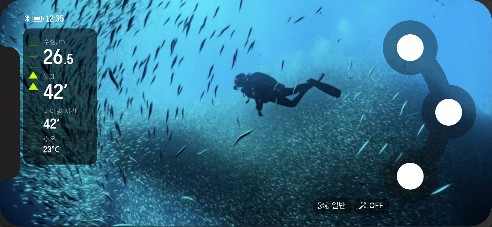
DIVEROID App 3.0
01 · Introduction
App 3.0란?
DIVEROID App 3.0은 다이브로이드 기기와 함께 쓰는 전용 앱입니다. 스마트폰을 하우징에 넣고 닫으면 그때부터 다이빙 컴퓨터이자 수중 카메라가 되고, 물 밖으로 나오면 로그북이 저절로 만들어집니다. 다이빙 중에 기기를 바꿔 들 일도, 다이빙이 끝나고 수첩에 옮겨 적을 일도 없습니다.
App 3.0이 하는 일
- Universal Pro 하우징만으로도 수중 사진·동영상 촬영과 실시간 색상 보정을 사용할 수 있습니다.
- Universal Pro + Mini를 함께 쓰면 수심·수온을 감지해 다이빙 컴퓨터 기능까지 완성됩니다.
- 다이빙 컴퓨터 설정과 다이빙 플래너로 다이빙을 미리 계획할 수 있습니다.
- 다이빙이 끝나면 로그북이 자동으로 생성됩니다. 날짜·위치·최대 수심·다이빙 시간·수온과 수심 그래프까지 한곳에 정리됩니다.
- 전 세계 다이빙 포인트를 검색하고 다른 다이버의 리뷰와 평점을 확인할 수 있습니다.
- 개인 클라우드를 연결해 사진과 영상을 관리할 수 있습니다.
- 스쿠버 다이빙과 프리다이빙을 모두 지원합니다.
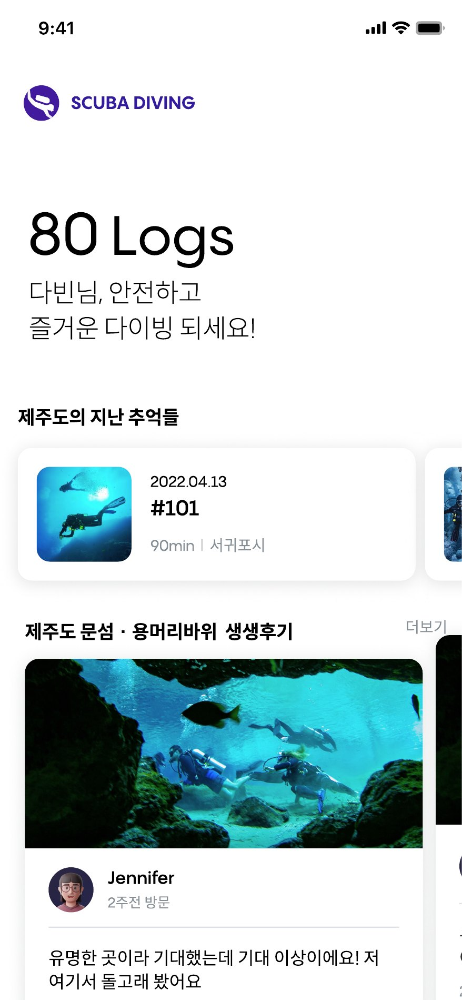
App 3.0의 다이빙 컴퓨터 기능은 다이빙을 보조하는 도구입니다. 다이빙 교육과 자격증, 그리고 다이버 본인의 판단을 대체하지 않습니다. 앱이 안내하는 정보는 참고 자료이며, 백업 다이브컴퓨터와 안전 수칙을 함께 지켜 주세요.
02 · Getting started
시작하기
앱을 설치하고 아래 순서대로 진행하면 첫 다이빙 준비가 끝납니다. 각 단계는 앱이 차례로 안내하니, 화면을 따라오시면 됩니다.
App Store(iOS) 또는 Google Play(Android)에서 “DIVEROID”를 검색해 설치하세요.
이메일로 가입하거나 애플·구글·페이스북 계정으로 바로 시작할 수 있습니다. 먼저 둘러보고 싶다면 게스트로 둘러보기를 선택하세요.
이메일로 가입하면 인증 메일이 발송됩니다. 메일을 확인해야 가입이 완료됩니다. 비밀번호는 영문과 숫자를 섞어 8~15자로 만들어 주세요.
닉네임, 주로 하는 다이빙 유형(스쿠버·프리다이빙), 자격 단체와 레벨을 입력합니다.
촬영과 기기 연결에 필요한 권한을 허용합니다.
사용하는 다이브로이드 기기를 등록합니다. 나중에 마이페이지에서도 추가할 수 있습니다.
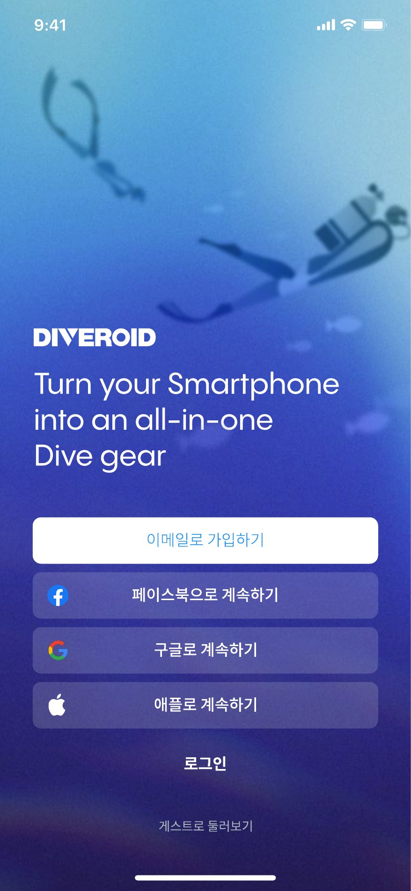
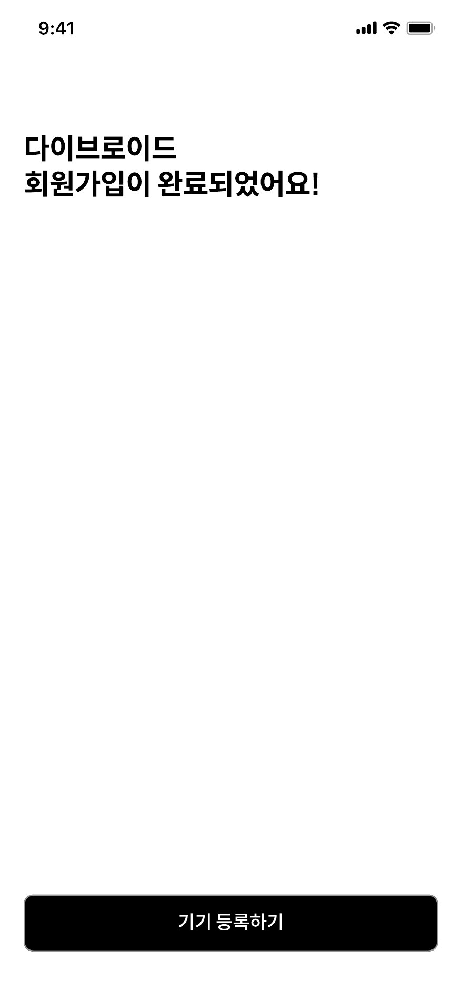
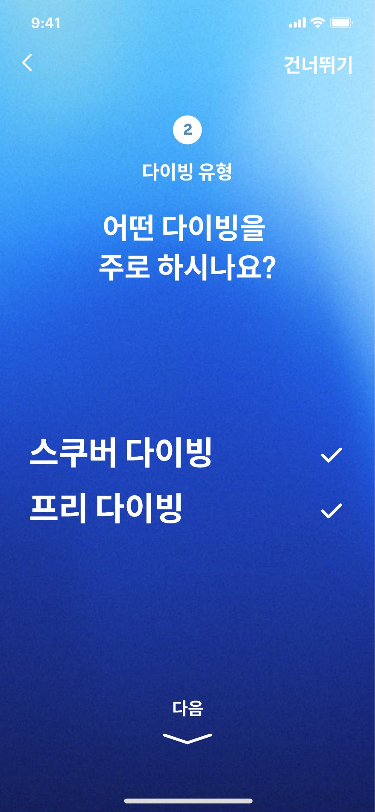
스쿠버만 고르면 스쿠버가, 프리다이빙만 고르면 프리다이빙이 기본 모드가 됩니다. 둘 다 고르면 스쿠버로 시작합니다. 모드는 홈 화면에서 언제든 바꿀 수 있습니다.
권한 안내
허용하지 않으면 일부 기능을 쓸 수 없습니다. 아래 권한은 각각 이렇게 쓰입니다.
| 권한 | 구분 | 쓰이는 곳 |
|---|---|---|
| 시스템 설정 변경 | 필수 | 블루투스 연결 및 기타 예외 사항 적용 |
| 카메라 | 필수 | 수중 촬영 및 이미지 저장, 시리얼 번호 스캔 |
| 기기 위치 접근 | 선택 | 로그 위치 기록 · 주변 다이빙 포인트 추천 · 날씨 정보 |
| 블루투스 · 마이크 | — | 기기 연결 · 동영상 녹음 |
위치 권한을 허용하지 않고 다이빙하면, 그 로그에는 위치 정보가 남지 않고 지도에도 표시되지 않습니다.
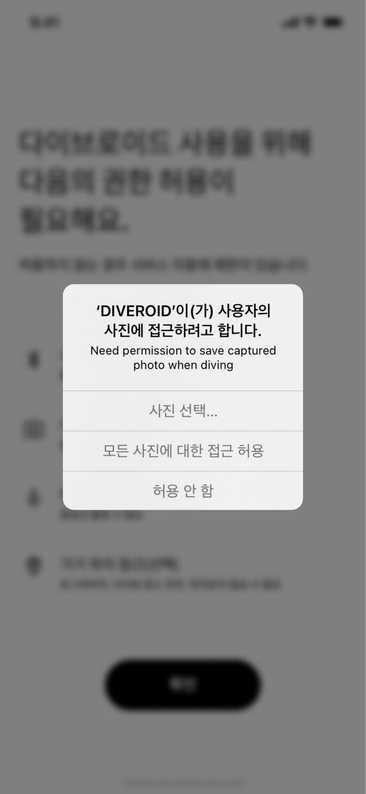
기기 등록하기
등록할 기기를 고른 뒤 안내에 따라 진행합니다. 기기가 여러 대라면, 먼저 선택한 기기를 등록한 다음 추가로 등록할 수 있습니다.
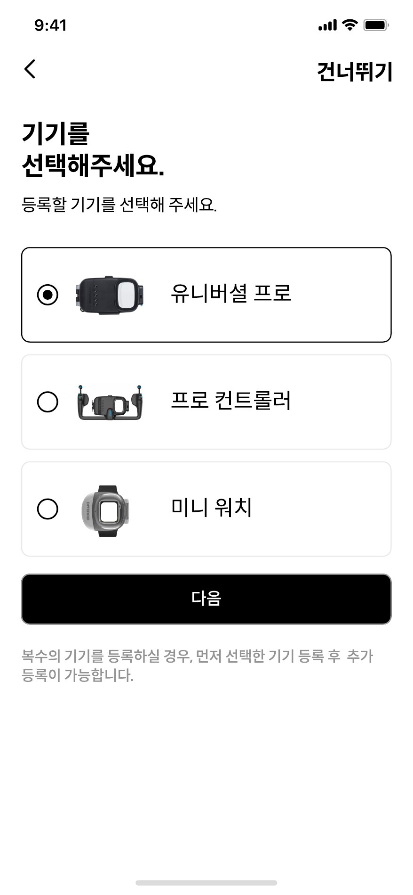
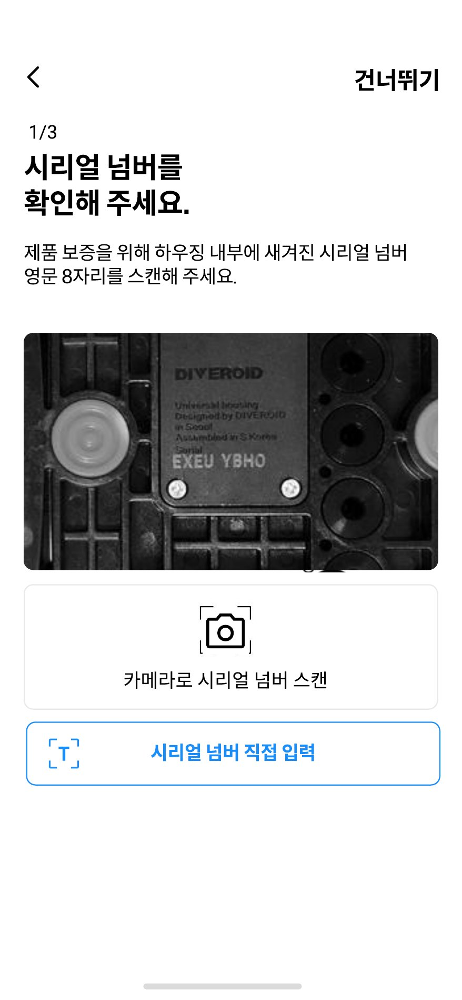
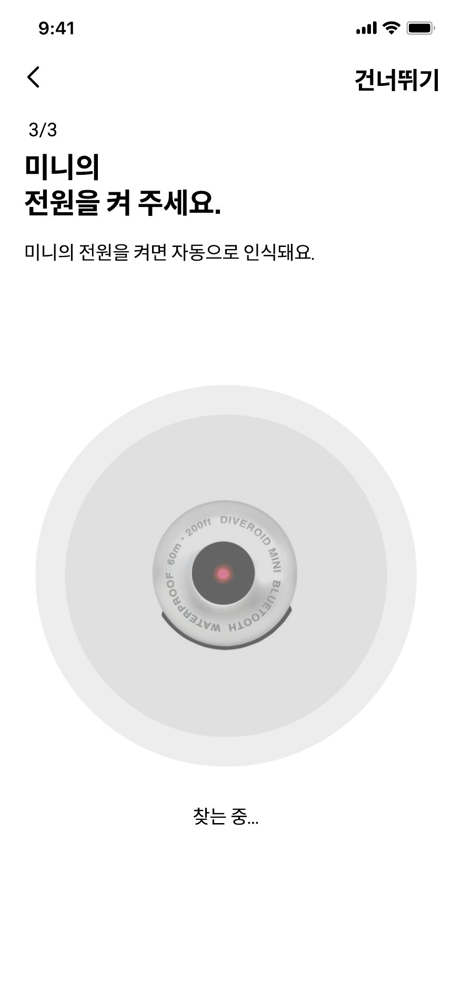
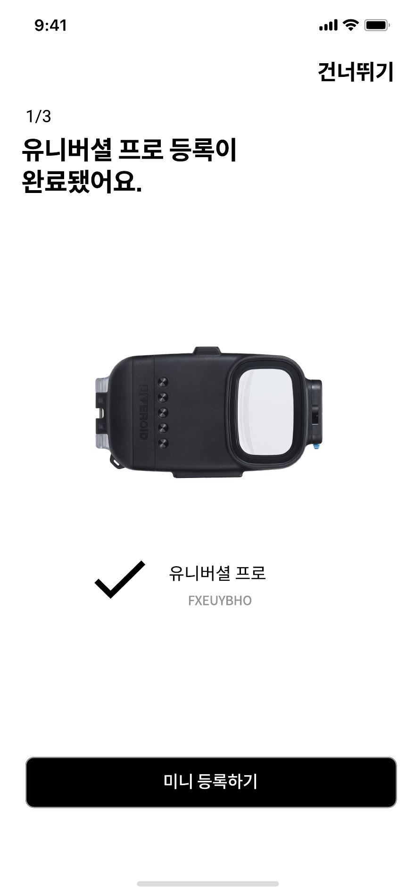
기기를 찾지 못하면 다시 찾기를 누르거나 자주 묻는 질문을 확인하세요. 지금 등록하지 않고 건너뛰기를 눌러도 되며, 나중에 마이페이지 → 나의 기기에서 등록할 수 있습니다.
03 · Home
홈 화면
홈은 지금 내 상황에 맞는 것만 보여 줍니다. 로그가 없으면 어디서 첫 다이빙을 하면 좋을지, 로그가 쌓이면 지난 다이빙과 주변 포인트를 보여주는 식입니다.
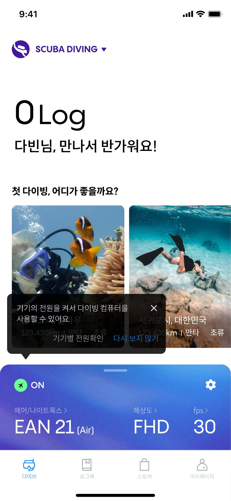
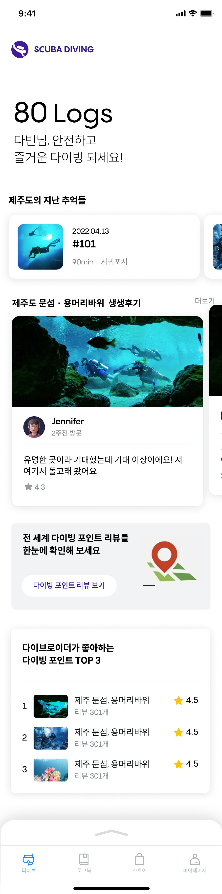
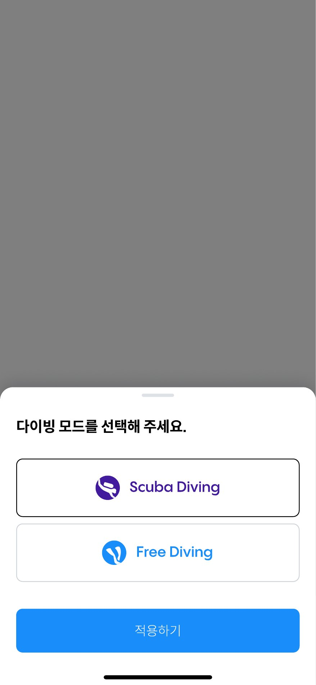
다이빙 모드 바꾸기
화면 위쪽의 SCUBA DIVING / FREE DIVING 타이틀을 누르면 모드 선택 시트가 열립니다. 원하는 모드를 고르고 적용하기를 누르세요.
다이빙 컴퓨터 카드
홈 아래쪽의 파란 영역이 다이빙 컴퓨터입니다. 손잡이를 탭하면 펼쳐지고, 아래로 스크롤하면 다시 접힙니다. 연필 아이콘을 누르면 값을 바로 수정할 수 있고, 각 항목을 누르면 설정 화면의 해당 위치로 이동합니다. 여기서 바꾼 값에 따라 컴퓨터의 알고리즘과 계산 결과가 달라집니다.
날씨와 지역 이름
- 날씨 정보는 다이빙 포인트 근처에 있을 때 표시됩니다. 내륙이나 포인트가 없는 지역에서는 나타나지 않습니다.
- 위치 권한을 허용하지 않으면 날씨와 위치 정보가 표시되지 않습니다.
- 지역은 고유한 이름이 있으면 그 이름(예: 문섬)으로, 없으면 행정 지역명(예: 서귀포시)으로 표시됩니다.
주변 다이빙 포인트
상단의 지역 이름을 누르면 포인트 검색 화면이 열립니다. 내 위치에서 반경 5km 안의 다이빙 포인트를 보여주고, 기본 정렬은 거리순입니다. 지역 목록은 가나다 오름차순으로 정렬됩니다.
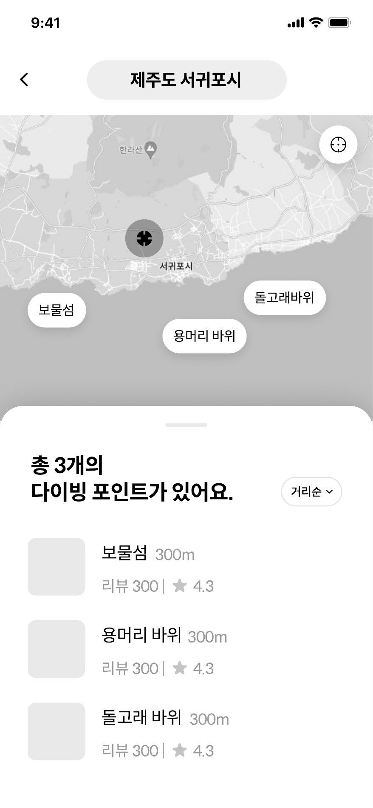
위치 권한에 동의하지 않은 상태에서 거리순을 선택하면 권한 동의 팝업이 나타납니다.
04 · Before the dive
다이빙 준비
물에 들어가기 전에 앱이 세 가지를 확인합니다. 비행기 모드, 하우징 닫기, 그리고 누수 예방 테스트입니다. 순서대로 따라오시면 됩니다.
비행기 모드가 꺼져 있으면 수중에서 배터리가 빠르게 소모됩니다. 앱이 먼저 안내해 줍니다.
하우징을 닫으면 자동으로 다이빙 컴퓨터 모드로 들어갑니다.
하우징을 닫은 채 움직임이 없는 평평한 곳에 두면 자동으로 시작됩니다. 하우징 안의 압력 변화를 감지해 누수 가능성을 확인합니다.
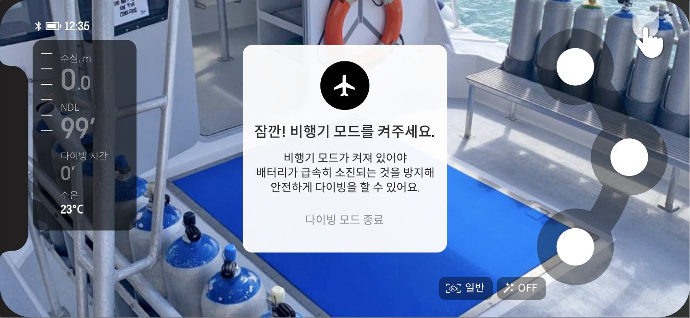
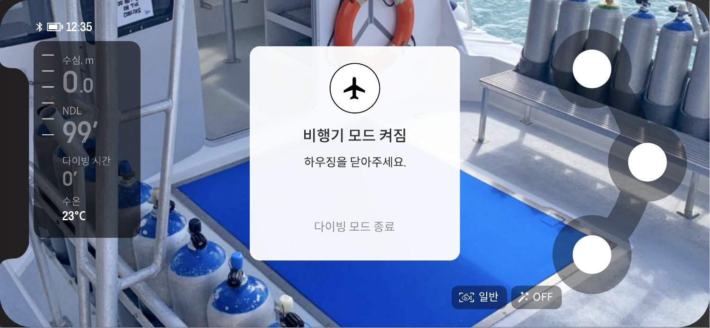
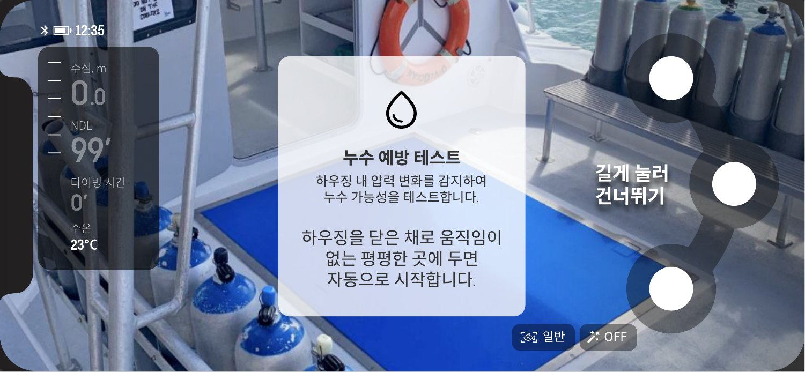
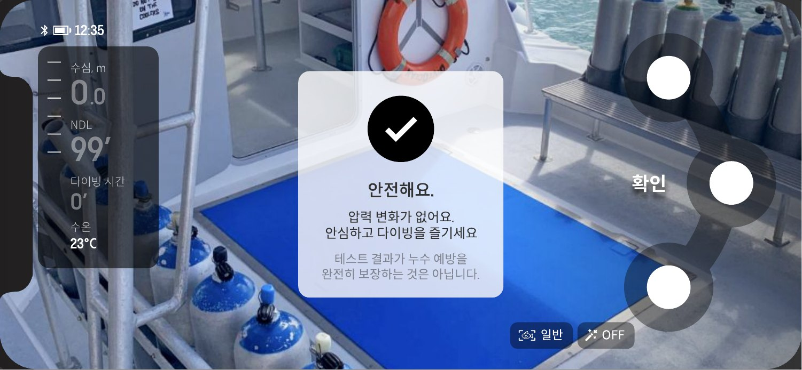
누수 예방 테스트가 방수를 완전히 보장하지는 않습니다. “누수 가능성이 있어요”가 나오면 하우징 체결과 O링 상태를 다시 확인한 뒤 재시도하고, 같은 결과가 반복되면 사용을 멈추고 help@diveroid.com으로 문의해 주세요.
테스트 중 하우징이 움직이면 “앗, 움직이시면 안 돼요” 안내가 뜨고 다시 시작됩니다. 버튼을 길게 누르면 테스트를 건너뛸 수 있습니다.
배터리와 저장 공간
수중에서는 충전도 저장 공간 확보도 할 수 없습니다. 입수 전에 배터리를 충분히 충전하고, 여유 저장 공간을 확보해 주세요. 배터리나 저장 공간이 부족하면 앱이 안내하면서 동영상 설정을 낮추거나 절전 모드로 전환할지 물어보고, 더 부족해지면 다이빙 종료 절차를 안내합니다. 자세한 기준은 그때그때 앱 화면의 안내를 따라 주세요.
다이빙 컴퓨터 설정
홈의 컴퓨터 카드나 설정 화면에서 아래 항목을 미리 정해 둘 수 있습니다. 설정 값에 따라 알고리즘과 계산 결과가 달라집니다.
- 에어 / 나이트록스 — 산소 비율을 바꾸면 MOD가 자동으로 다시 계산됩니다.
- 다이빙 환경 — 바다 / 민물
- 컨디션 — 좋음 / 보통 / 나쁨. 컨디션이 좋지 않다고 설정하면 더 보수적인 알고리즘이 적용됩니다.
- 수중 알림 방식 — 소리 / 진동
- 카메라 — 해상도(FHD · 4K)와 초당 프레임 수(30 · 60)
- 누수 방지 테스트 — 항상 실행 / 지금 테스트하기
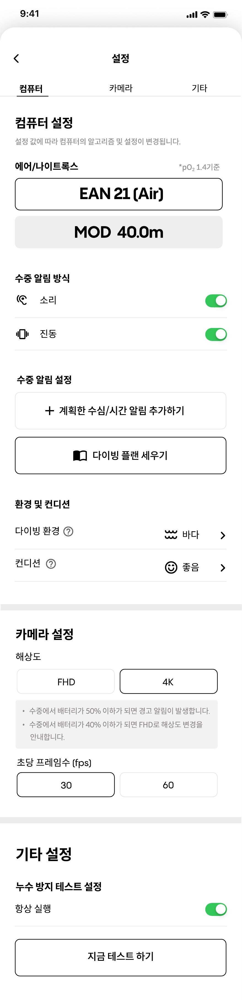
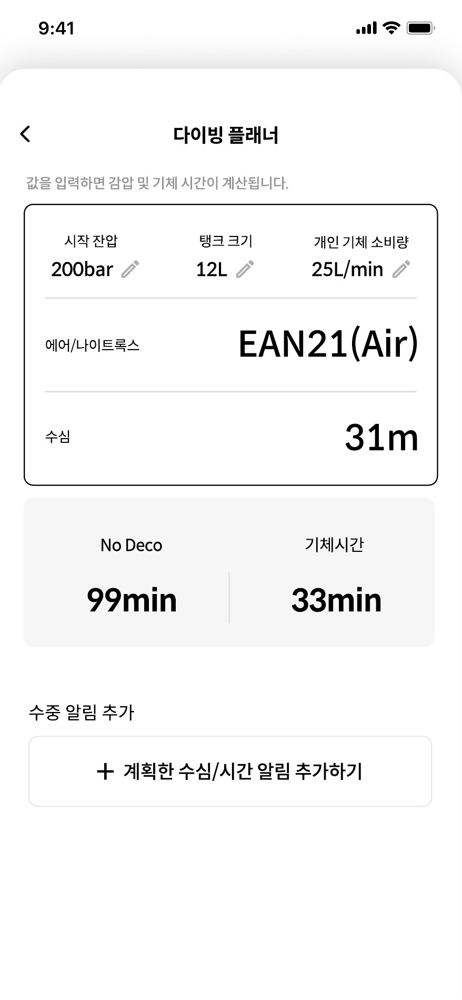
다이빙 플래너
계획한 수심과 기체 정보를 입력하면 NDL(무감압 한계)과 기체 시간이 계산됩니다. 시작 잔압·탱크 크기·개인 기체 소비량의 기본값은 200bar · 12L · 25L/min이며, 연필 아이콘으로 바꿀 수 있습니다.
수심·시간 알림 미리 설정하기
원하는 수심이나 다이빙 시간에 알림을 받도록 미리 설정할 수 있습니다. 여러 개를 등록할 수 있고(최대 7개), 등록 순서와 상관없이 얕은 수심부터 안내됩니다. 마지막 알림은 “마지막 수심알림”으로 표시됩니다.
06 · Dive screen
다이빙 화면 보기
입수해서 수심이 변하기 시작하면 다이빙이 자동으로 시작되고, 왼쪽 정보창이 활성화됩니다. 수면에서 대기 중일 때는 숫자가 흐리게 표시됩니다.
색으로 읽는 상태
다이빙 컴퓨터 화면은 초록 · 노랑 · 빨강 세 가지 색으로 상태를 알려줍니다. 정지와 관련된 상황에서는 주황색이 더해집니다.
| 색 | 뜻 |
|---|---|
| 초록 | 안전, 이상 없음 |
| 노랑 | 주의가 필요한 상태 |
| 주황 | 정지해야 할 범위를 벗어났을 때 |
| 빨강 | 경고 — 즉시 대응이 필요합니다 |
이 색은 설정한 수심 위로 다시 올라오기 전까지 유지되며, 더 깊이 내려가도 더 바뀌지 않습니다. 고장이 아니라 정해진 동작입니다.
수심 그래프
화면의 수심 그래프는 최근 10분의 기록을 보여 줍니다. 전체 프로파일은 다이빙이 끝난 뒤 로그북에서 확인할 수 있습니다.
카메라 메뉴
① 을 짧게 눌러 메뉴를 열면 화각(광각 · 일반 · 줌 · 셀피), 에어/나이트록스 설정, 최근 찍은 사진 등으로 이동할 수 있습니다. 메뉴를 열면 지금 쓰고 있는 화각에 먼저 포커스가 잡히고, 사진 메뉴에 들어가면 마지막에 찍은 사진부터 보여 줍니다.
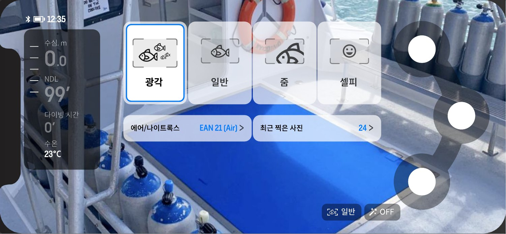
수중에서는 카메라 화각 메뉴만 사용할 수 있습니다. 광각·초광각·접사·셀피는 스마트폰 기종에 따라 지원하지 않을 수 있습니다.
나침반
나침반은 절전 모드에서 사용합니다. 정확도가 떨어지면 교정 안내가 뜨며, 스마트폰을 8자(∞) 모양으로 움직이면 교정됩니다. 응답이 없으면 팝업이 저절로 닫히고, 그 다이빙이 끝날 때까지 다시 뜨지 않습니다.
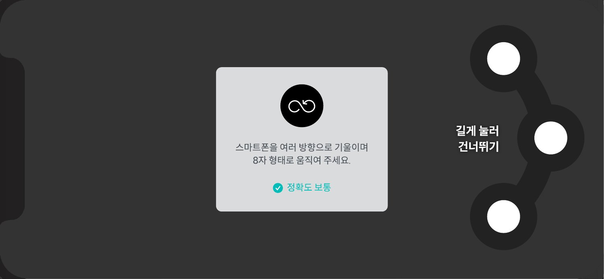
07 · Safety
안전 기능
다이빙 중 주의가 필요한 상황이 생기면 App 3.0이 화면·소리·진동으로 알려 줍니다. 경고 상태에 들어가면 글자가 빨갛게 바뀌고 화살표가 움직이며, 알림 팝업은 2초 뒤 사라집니다.
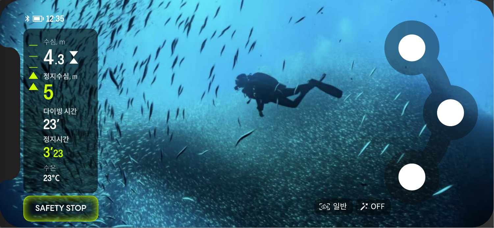
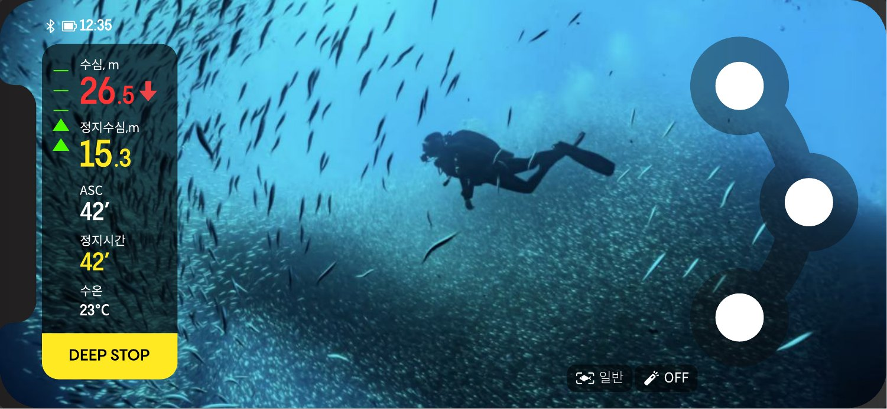
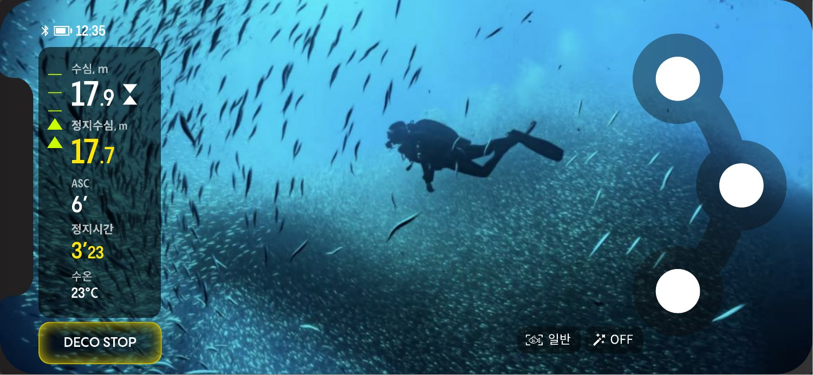
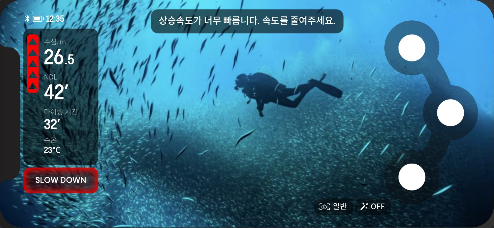
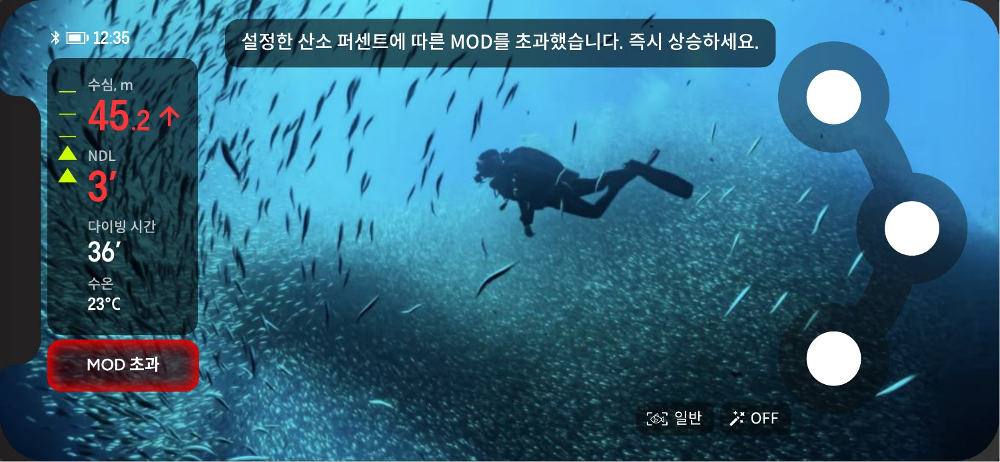
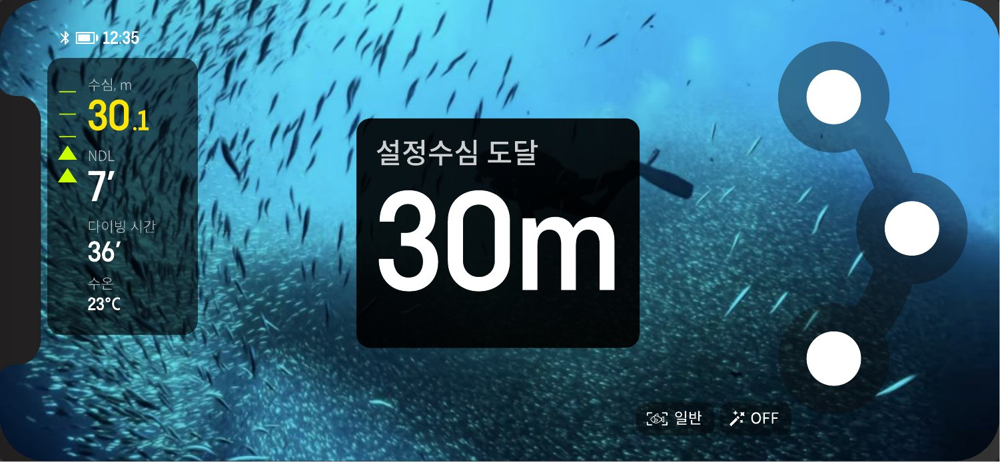
안전 정지 (SAFETY STOP)
12m보다 깊이 내려간 다이빙에서는 올라오는 길에 안전 정지를 안내합니다. 3~6m 구간에서 3분간 머무르면 되고, 카운트다운이 끝날 때까지 수심을 유지해 주세요. 30m 이상 내려갔거나 무감압 한계가 5분 이하로 줄어든 다이빙에서는 정지 시간이 5분으로 자동 연장됩니다.
딥스탑 (DEEP STOP)
깊은 다이빙에서 올라올 때 중간 정지가 필요하면 DEEP STOP이 표시됩니다. 화면에 표시된 정지 수심 범위 안에 머무르면 카운트다운이 진행됩니다. 범위를 벗어나면 색이 바뀌며 알려 줍니다.
감압 정지 (DECO STOP)
무감압 한계를 넘기면 감압 다이빙 상태로 들어가고, 상승 한계 수심에서 반드시 머물러야 하는 감압 정지가 표시됩니다.
권장 안전 정지와 딥스탑은 지키지 않아도 위험 다이빙으로 기록되지 않습니다. 하지만 감압 정지와 필수 안전 정지는 반드시 지켜야 합니다.
상승 속도 경고 (SLOW DOWN)
분당 10m 이상으로 상승하면 “상승 속도가 너무 빠릅니다. 속도를 줄여주세요” 경고가 표시됩니다. 경고가 사라질 때까지 천천히 올라오세요.
MOD 초과
설정한 산소 비율로 계산된 최대 운용 수심(MOD)을 넘기면 “설정한 산소 퍼센트에 따른 MOD를 초과했습니다. 즉시 상승하세요” 경고가 강한 소리와 진동과 함께 표시됩니다.
기타 안내
- 설정 수심·시간 알림 — 미리 정해 둔 수심이나 다이빙 시간에 도달하면 알려 줍니다.
- 하강 경고 — 너무 빠르게 내려갈 때는 글자가 점멸하며 소리·진동으로 알립니다.
- 기기 배터리 알림 — 미니 배터리가 부족하면 다이빙 전에 안내가 뜹니다. 다이빙 중 미니가 방전되면 컴퓨터 기능을 쓸 수 없습니다.
- 다이빙 자제 권고 — 직전 다이빙에서 위험한 상황이 있었다면, 다음 다이빙까지 남은 시간을 안내합니다.
상승 속도·MOD·감압 정지 경고가 뜨면 즉시 안전 수칙에 따라 대응하세요. 경고를 무시하고 상승하면 건강과 안전에 심각한 위험이 있을 수 있으며, 앱은 그 다이빙을 위험 다이빙으로 기록하고 다음 다이빙까지 남은 시간을 안내합니다. App 3.0의 안내는 참고용이며, 다이버 본인의 판단과 안전 교육이 우선입니다.
08 · Freediving
프리다이빙
홈에서 모드를 FREE DIVING으로 바꾸면 프리다이빙에 맞는 화면으로 전환됩니다. 한 번의 세션 안에서 여러 번 반복해 잠수하는 흐름에 맞춰, 수면 휴식 시간과 잠수별 기록을 중심으로 보여 줍니다.
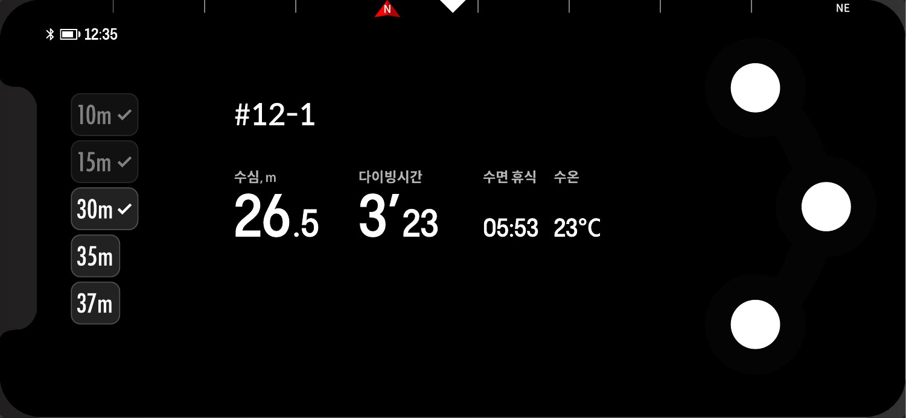
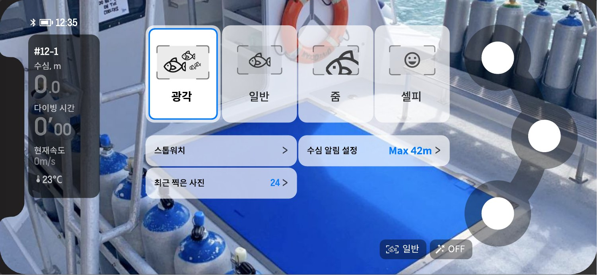
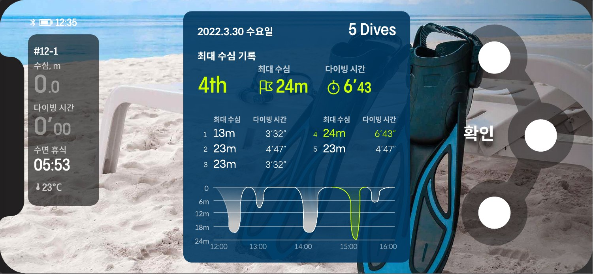
- 수면 휴식 시간 — 물 밖으로 나온 뒤 지난 시간이 표시되어, 다음 잠수 타이밍을 잡는 데 참고할 수 있습니다.
- 스톱워치 — 수중에서 바로 쓸 수 있고 랩 기록도 남길 수 있습니다.
- 수심 알림 — 다이빙 중에도 버튼으로 설정을 바꿀 수 있습니다.
- 세션 요약 — 잠수를 마칠 때마다 최대 수심과 시간이 정리되고, 그 세션의 가장 좋은 기록이 표시됩니다.
홈 화면에서는 지금까지의 모든 로그를 통틀어 가장 깊었던 수심과 가장 길었던 무호흡 시간을 보여 줍니다. 신기록을 세우면 다이빙 직후 홈에서 바로 알려 줍니다.
앱의 수심·시간 표시는 보조 정보입니다. 반드시 버디와 함께, 정규 교육에서 배운 수칙에 따라 다이빙하세요.
09 · Logbook
다이빙 종료 & 로그북
수면으로 올라오면 다이빙이 자동으로 종료됩니다. 따로 눌러야 할 버튼은 없습니다. 종료되면 방금 한 다이빙의 요약이 화면에 뜨고, 로그북이 저절로 만들어집니다.
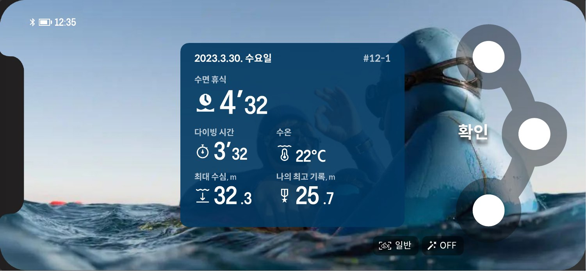
자동으로 만들어지는 로그북
기기에 기록된 데이터를 바탕으로 로그가 생성됩니다. 날짜 · 위치 · 날씨 · 최대 수심 · 다이빙 시간 · 바닥 수온 · 사용 기체와 함께 수심 프로파일 그래프, 그리고 그 다이빙에서 찍은 사진·영상이 자동으로 붙습니다.
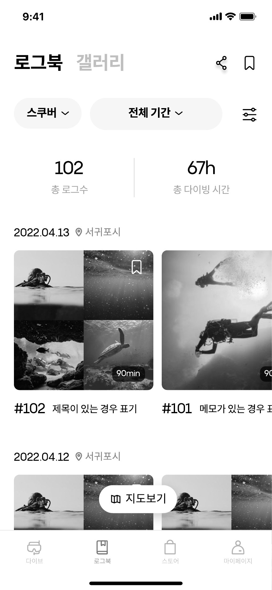
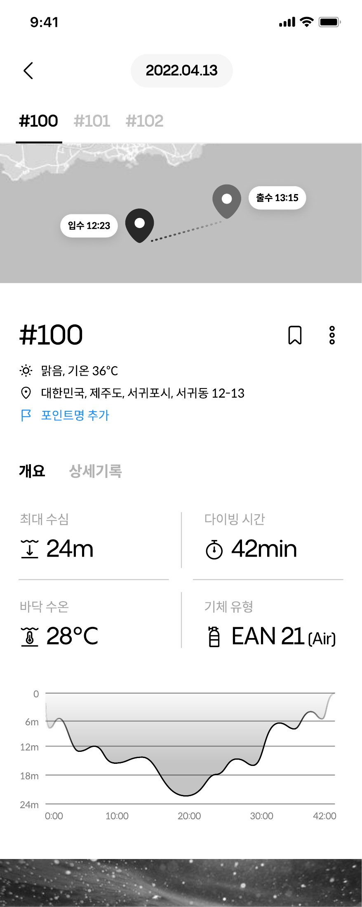
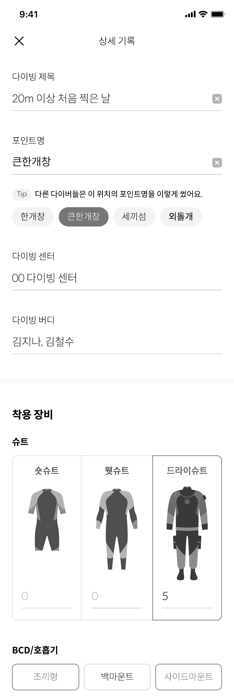
직접 기록 더하기
상세기록에서 다이빙 제목·포인트명·버디·다이빙 센터·슈트·웨이트· 입수 전 잔압과 출수 후 잔압, 시야, 본 수중 생물 등을 추가할 수 있습니다. 일부만 입력해도 저장됩니다.
- 입수 위치 반경 30m 안에 등록된 포인트가 있으면 포인트명이 자동 입력됩니다. 포인트명을 넣지 않아도 저장할 수 있습니다.
- “위에서 선택한 옵션을 기본값으로 저장하기”를 체크하면 다음 기록부터 같은 값이 미리 채워집니다. 단, 제목·포인트명·메모처럼 직접 쓰는 항목은 제외됩니다.
- 입력하지 않은 항목은 - 로 표시됩니다.
- 제목과 메모를 모두 쓰면 목록에는 제목이 표시되고, 메모만 쓰면 메모가 표시됩니다.
- 에어로 다이빙한 로그는 EAN 21 (Air)로 함께 표기됩니다.
달력과 지도로 찾기
- 달력에서 월 단위로 로그를 걸러 볼 수 있습니다. 기록이 하나라도 있는 달만 선택할 수 있습니다.
- 필터를 걸면 화면에 보이는 로그만 집계되어 통계가 바뀝니다.
- 지도를 열면 가장 최근 로그 위치로 이동합니다. 하루에 여러 번 다이빙했다면 그날 첫 로그의 위치 하나로 표시됩니다.
- 위치 권한을 허용하고 다이빙한 로그만 지도에 표시됩니다. 목록과 지도의 개수가 다르면 앱이 안내해 줍니다.
플랜에 따라 로그북에서 볼 수 있는 범위가 다릅니다. 게이지 모드에서 쌓은 로그는 상세 정보를 보거나 수정할 수 없고, 로그북 프로를 쓰다가 일반으로 바뀌면 이전에 넣은 상세 정보는 보이지만 더 이상 수정할 수 없습니다.
10 · Media
사진 & 영상
다이빙 중 찍은 사진과 영상은 갤러리에 다이빙별로 모입니다. 수중에서는 빨강·노랑 파장이 사라져 화면이 푸르게 보이는데, 색상 보정으로 자연스러운 색을 되살릴 수 있습니다.
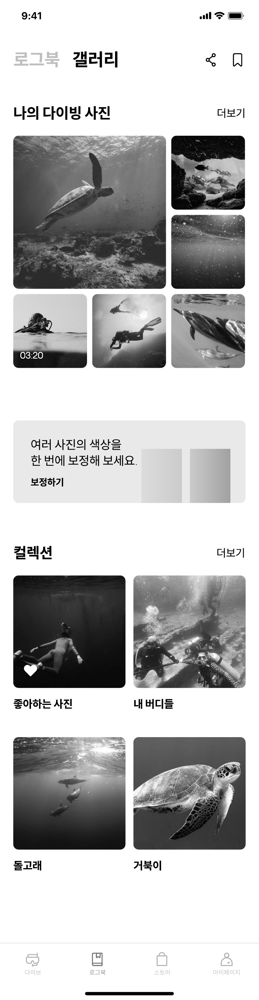
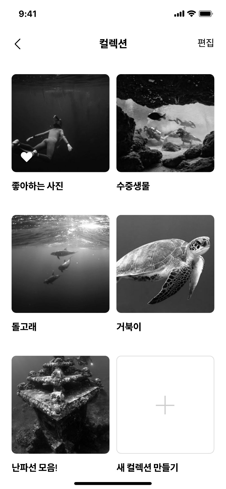
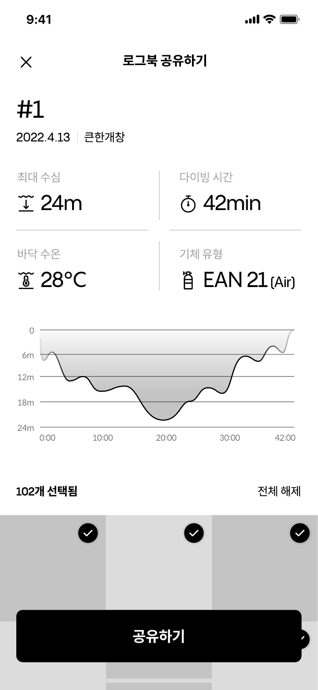
로그북 썸네일이 정해지는 방식
- 로그 하나당 미리보기는 최대 4개이고, 먼저 찍은 미디어부터 순서대로 놓입니다.
- 사진이 아주 많으면 고르게 나눠서 4장을 뽑습니다. 100장을 찍었다면 1번째·33번째·66번째·99번째 식입니다.
- 하트를 누른 미디어가 있으면 그 사진이 먼저 표시됩니다.
미디어 보기
- 사진·영상을 열면 찍힌 시점의 수심과 다이빙 시간이 함께 표시됩니다. 영상은 재생하는 동안 수심이 실시간으로 바뀝니다.
- 사진을 길게 누르면 원본이 보이고, 손을 떼면 보정된 사진으로 돌아옵니다.
- 영상은 화면에 나타나는 순간부터 자동으로 재생됩니다.
색상 보정
촬영할 때 ③ 을 길게 눌러 실시간 보정을 켜고 끌 수 있고, 갤러리에서 나중에 보정할 수도 있습니다. 갤러리에서 한 번에 보정할 수 있는 사진은 최대 10장입니다.
컬렉션
마음에 드는 사진을 주제별로 모아 둘 수 있습니다. 새 컬렉션을 만들고 이름을 붙인 뒤 사진을 담으면 됩니다. 컬렉션을 삭제해도 갤러리의 사진과 영상은 지워지지 않습니다.
편집 모드에서는 새 컬렉션을 만들 수 없습니다. 편집을 끝낸 뒤 만들어 주세요.
공유하기
로그북 메뉴에서 공유할 로그를 고르면 공유용 링크가 만들어집니다. 링크를 받은 사람은 앱이 없어도 로그북을 볼 수 있습니다. 링크는 만든 날부터 3일간 유효합니다.
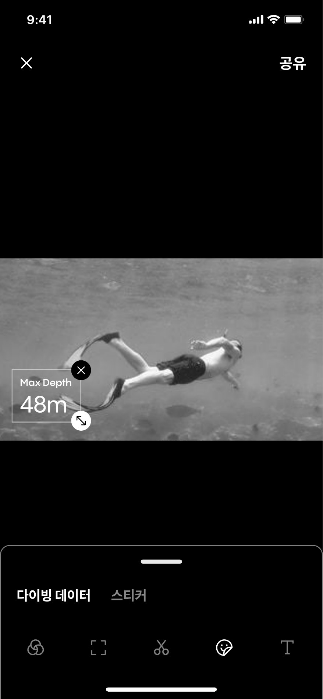
다른 카메라로 찍은 사진 가져오기
액션캠 등 다른 카메라로 찍은 사진·영상도 로그북에 연동할 수 있습니다. 마이페이지에서 카메라를 등록한 뒤 아래 순서로 진행하세요.
QR 코드 안의 시간 정보를 기준으로 사진의 시각을 맞춥니다. 카메라의 시간 설정이 정확한지 먼저 확인해 주세요. 써드파티 카메라를 등록하지 않았다면 이 메뉴는 표시되지 않습니다.
11 · Dive points
다이빙 포인트 & 리뷰
전 세계 다이빙 포인트를 검색하고, 다른 다이버들이 남긴 리뷰와 평점을 확인할 수 있습니다. 포인트 상세에서는 그곳에서 다이빙한 사람들의 평균 최대 수심과 시야도 함께 볼 수 있습니다.
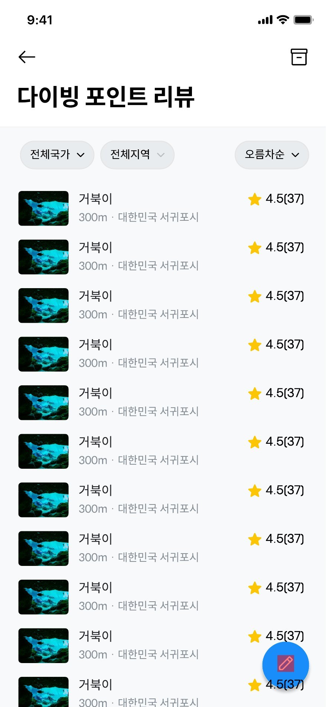
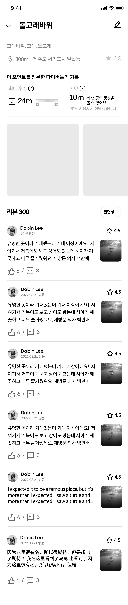
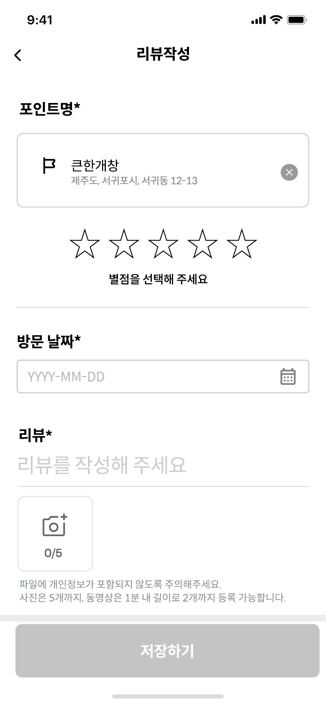
포인트 찾기
- 홈 상단의 지역 이름을 누르면 포인트명이나 지역으로 검색할 수 있습니다.
- 정렬은 거리순 · 가나다순 · 별점순 · 리뷰순 · 최신순 중에서 고를 수 있습니다.
- 포인트의 평균 기록은 다이브로이드로 그곳에서 다이빙한 다이버들의 데이터를 모은 값입니다.
리뷰 쓰기
별점을 고르고(1점 “정말 별로에요” ~ 5점 “정말 추천해요”), 방문 날짜와 포인트명을 입력한 뒤 내용을 적습니다. 다이빙을 막 마쳤다면 그 로그를 골라 바로 리뷰를 쓸 수도 있습니다.
리뷰와 사진은 다른 다이버에게 공개됩니다. 올리는 파일에 개인정보가 포함되지 않도록 주의해 주세요.
등록되지 않은 포인트라면
검색해도 나오지 않는 곳이라면 직접 추가할 수 있습니다. 지도를 움직여 위치를 고르면 주소가 자동으로 채워지고, 포인트 이름을 입력하면 됩니다. 다른 다이버들이 그 위치를 뭐라고 불렀는지도 함께 보여 줍니다.
리뷰에 표시되는 시간
| 지난 시간 | 표시 |
|---|---|
| 1시간 이내 | 방금 |
| 1시간 ~ 24시간 | N시간 전 |
| 24시간 ~ 1주 | N일 전 |
| 1주 ~ 3주 | N주 전 |
| 3주 넘음 | YYYY.MM.DD |
12 · Store & My page
스토어 & 마이페이지
플랜과 기능
App 3.0은 게이지 모드(기본)로도 촬영과 로그북을 쓸 수 있습니다. 다이빙 컴퓨터의 NDL·경고 기능이나 나이트록스, 나침반, 4K 촬영 같은 기능은 플랜을 올리거나 개별로 구매해 사용합니다.
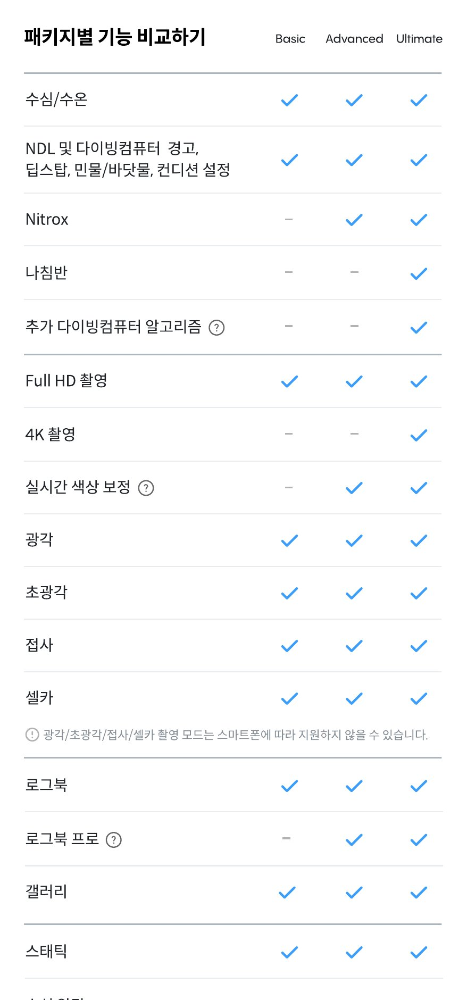
- 플랜은 게이지 모드 → Basic → Advanced → Ultimate 순으로 올라갑니다. 다운그레이드는 할 수 없고, 지금 쓰는 플랜보다 상위 플랜만 선택할 수 있습니다.
- 개별 구매도 가능합니다. 구매한 기능은 “구매 완료”, 플랜에 포함된 기능은 “사용”, 게이지 모드에 들어 있는 기능은 “기본 제공”으로 표시됩니다.
- 기프트 카드가 있다면 코드를 스캔하거나 직접 입력해 등록할 수 있습니다. 등록 후에는 환불되지 않습니다.
무료 체험 기간이 끝났는데 결제하지 않으면 다이빙 컴퓨터 기능이 잠깁니다. 다이빙 전에 구독 상태를 꼭 확인해 주세요.
나의 기기
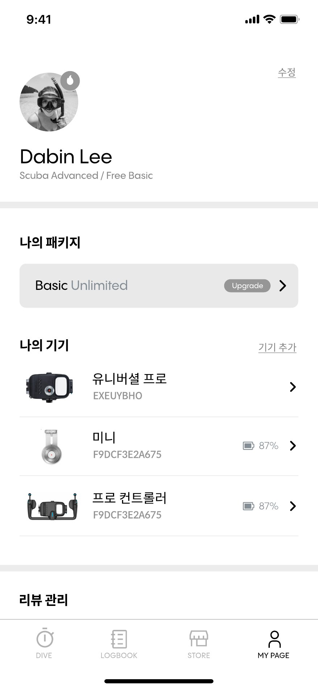
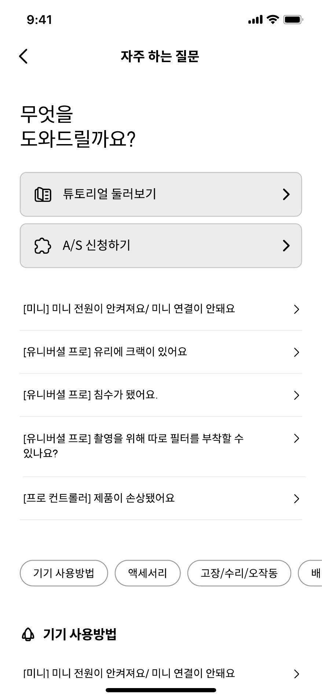
- 등록한 기기의 배터리 상태와 펌웨어 업데이트 여부를 확인할 수 있습니다.
- 새 기기를 등록하면 바로 사용할 수 있고, 전에 등록한 기기는 자동으로 해지됩니다. 다른 시리얼을 등록하려면 지금 시리얼을 먼저 해지해야 합니다.
- 미니가 연결되지 않으면 전원을 2초 이상 길게 눌러 가운데 불빛을 확인하고, 블루투스 연결을 점검한 뒤 스마트폰과 미니를 모두 껐다 켜 보세요. 일정 시간 페어링이 되지 않으면 배터리를 아끼기 위해 미니가 자동으로 꺼집니다.
데이터 관리
같은 계정으로 다른 스마트폰에서 만든 로그를 다이빙 로그 동기화로 가져올 수 있습니다. 사진과 영상을 스마트폰 기본 사진 앱에 함께 저장하도록 설정할 수도 있습니다.
기본 설정
언어와 단위(m/kg · ft/lb)를 바꿀 수 있습니다. 로그북에 표시되는 단위는 여기서 정한 값을 따릅니다.
제품 보증과 A/S
다이브로이드 제품은 2년 동안 재료 및 생산 결함을 보증합니다. 보증 조건과 적용 제외 사항은 Universal Pro 사용자 가이드의 제품 보증 항목을 확인해 주세요.
A/S는 마이페이지 → 고객센터 → A/S 신청하기에서 접수합니다. (로그인한 뒤에 보입니다.)
고장·수리·오작동이나 배터리 교체를 고르면 주소 입력 칸이 나타납니다.
유형에 따라 사진 5개 + 1분 이내 동영상 2개, 또는 사진 최대 8장을 올릴 수 있습니다. 파일은 개당 20MB 미만이어야 합니다.
검수·확인 → 안내(경우에 따라 유료 결제) → 수리 → 안전 포장 후 발송 순으로 진행되며, 나의 문의 내역에서 상태를 볼 수 있습니다.
계정 탈퇴
한 번 삭제한 계정은 복구할 수 없습니다. 모든 로그와 사진이 삭제되니 사진과 로그를 미리 저장해 주세요. 환불 처리가 끝나기 전에 계정을 삭제하면 구매 내역을 확인할 수 없어 환불을 받을 수 없습니다. 탈퇴 후 재가입에는 제한이 있으니, 다시 쓰실 계획이라면 고객센터로 먼저 문의해 주세요.
탈퇴는 마이페이지 → 나의 정보 → 계정 탈퇴하기에서 진행하며, 인증 메일을 확인해야 완료됩니다. 탈퇴 후에도 남아 있는 리뷰·댓글의 작성자는 “탈퇴한 사용자”로 표시됩니다.
13 · FAQ
자주 묻는 질문
그래도 해결되지 않는다면
앱 안의 고객센터 → 1:1 문의하기로 접수하시면 문의 내역에서 진행 상황을 확인할 수 있습니다. 이메일로 연락하실 경우 help@diveroid.com 으로 보내 주세요.